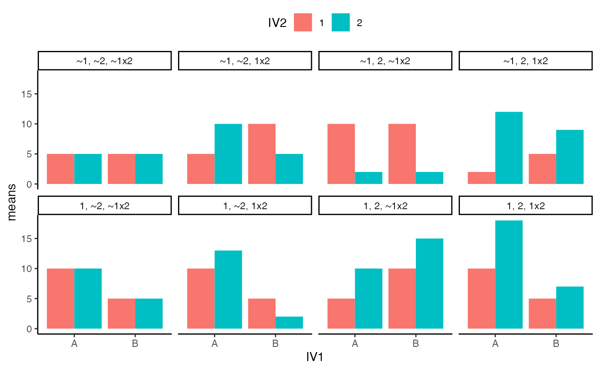

Lab7
Natalie Palmer
3/28/2022
Lab7.Rmd- Complete the 2x2 factorial lab found here https://crumplab.github.io/statisticsLab/lab-10-factorial-anova.html, up to section 10.4.8. More specifically, your task is to follow that lab exercise to load in the data, transform the data into long-format, conduct a 2x2 between subjects ANOVA, and write a short results section reporting the main effects and interaction.
library(data.table)
#all_data <- fread("https://github.com/CrumpLab/statisticsLab/raw/master/stroop_stand.csv")
all_data <- fread("data/stroop_stand.csv")
RTs <- c(as.numeric(unlist(all_data[,1])),
as.numeric(unlist(all_data[,2])),
as.numeric(unlist(all_data[,3])),
as.numeric(unlist(all_data[,4]))
)
Congruency <- rep(rep(c("Congruent","Incongruent"),each=50),2)
Posture <- rep(c("Stand","Sit"),each=100)
Subject <- rep(1:50,4)
stroop_df <- data.frame(Subject,Congruency,Posture,RTs)
library(tidyr)
stroop_long<- gather(all_data, key=Condition, value=RTs,
congruent_stand, incongruent_stand,
congruent_sit, incongruent_sit)
new_columns <- tstrsplit(stroop_long$Condition, "_", names=c("Congruency","Posture"))
stroop_long <- cbind(stroop_long,new_columns)
stroop_long <- cbind(stroop_long,Subject=rep(1:50,4))
library(dplyr)##
## Attaching package: 'dplyr'## The following objects are masked from 'package:data.table':
##
## between, first, last## The following objects are masked from 'package:stats':
##
## filter, lag## The following objects are masked from 'package:base':
##
## intersect, setdiff, setequal, union
library(ggplot2)
library(tidyr)
plot_means <- stroop_long %>%
group_by(Congruency,Posture) %>%
summarise(mean_RT = mean(RTs),
SEM = sd(RTs)/sqrt(length(RTs)))## `summarise()` has grouped output by 'Congruency'. You can override using the `.groups` argument.
ggplot(plot_means, aes(x=Posture, y=mean_RT, group=Congruency, fill=Congruency))+
geom_bar(stat="identity", position="dodge")+
geom_errorbar(aes(ymin=mean_RT-SEM, ymax=mean_RT+SEM),
position=position_dodge(width=0.9),
width=.2)+
theme_classic()+
coord_cartesian(ylim=c(700,1000)) * There is a significant effect of congruency. This shows us that people in the congruent task are significantly faster than the incongruent task, meaning that people respond quicker when the color and word match up versus when they do not. You can also see a difference between responses for the congruent and incongruent task depending on second variable- whether you are sitting or standing. This represents an interaction going on.
* There is a significant effect of congruency. This shows us that people in the congruent task are significantly faster than the incongruent task, meaning that people respond quicker when the color and word match up versus when they do not. You can also see a difference between responses for the congruent and incongruent task depending on second variable- whether you are sitting or standing. This represents an interaction going on.
## Df Sum Sq Mean Sq F value Pr(>F)
## Congruency 1 576822 576822 43.734 3.49e-10 ***
## Posture 1 32303 32303 2.449 0.119
## Congruency:Posture 1 6560 6560 0.497 0.481
## Residuals 196 2585080 13189
## ---
## Signif. codes: 0 '***' 0.001 '**' 0.01 '*' 0.05 '.' 0.1 ' ' 1- In chapter 10 of Crump et al. (2018), there is a discussion of patterns of main effects and interactions that can occur in a 2x2 design, which represents perhaps the simplest factorial design. There are 8 possible outcomes discussed https://crumplab.github.io/statistics/more-on-factorial-designs.html#looking-at-main-effects-and-interactions. Examples of these 8 outcomes are shown in two figures, one with bar graphs, and one with line graphs. Reproduce either of these figures using ggplot2. (3 points)
library(ggplot2)
p1<- data.frame(IV1 = c("A","A","B","B"),
IV2 = c("1","2","1","2"),
means = c(5,5,5,5))
p2<- data.frame(IV1 = c("A","A","B","B"),
IV2 = c("1","2","1","2"),
means = c(10,10,5,5))
p3<- data.frame(IV1 = c("A","A","B","B"),
IV2 = c("1","2","1","2"),
means = c(10,13,5,2))
p4<- data.frame(IV1 = c("A","A","B","B"),
IV2 = c("1","2","1","2"),
means = c(5,10,10,15))
p5<- data.frame(IV1 = c("A","A","B","B"),
IV2 = c("1","2","1","2"),
means = c(10,18,5,7))
p6<- data.frame(IV1 = c("A","A","B","B"),
IV2 = c("1","2","1","2"),
means = c(10,2,10,2))
p7<- data.frame(IV1 = c("A","A","B","B"),
IV2 = c("1","2","1","2"),
means = c(2,12,5,9))
p8<- data.frame(IV1 = c("A","A","B","B"),
IV2 = c("1","2","1","2"),
means = c(5,10,10,5))
all_22s <- rbind(p1,p2,p3,p4,p5,p6,p7,p8)
type <- c(rep("~1, ~2, ~1x2",4),
rep("1, ~2, ~1x2",4),
rep("1, ~2, 1x2",4),
rep("1, 2, ~1x2",4),
rep("1, 2, 1x2",4),
rep("~1, 2, ~1x2",4),
rep("~1, 2, 1x2",4),
rep("~1, ~2, 1x2",4))
type<-as.factor(type)
all_22s <- cbind(all_22s,type)
ggplot(all_22s, aes(x=IV1, y=means, group=IV2, fill=IV2))+
geom_bar(stat="identity", position="dodge")+
theme_classic()+
facet_wrap(~type, nrow=2)+
theme(legend.position = "top")
- In the conceptual section of this lab we used an R simulation to find the family-wise type I error rate for a simple factorial design with 2 independent variables. Use an R simulation to find the family-wise type I error rate for a factorial design with 3 independent variables. (3 points)
## [1] 0.3042
n <- 12
factorial_data <- tibble(A = factor(rep(c("L1","L2"), each = n)),
B = factor(rep(rep(c("L1","L2"), each = n/2),2)),
C = factor(rep(c("L1","L2"), n)),
DV = rnorm(n*2,0,1))
summary(aov(DV ~ A*B*C, data = factorial_data))## Df Sum Sq Mean Sq F value Pr(>F)
## A 1 0.639 0.639 0.574 0.4597
## B 1 1.184 1.184 1.063 0.3179
## C 1 0.025 0.025 0.022 0.8829
## A:B 1 0.037 0.037 0.033 0.8583
## A:C 1 4.654 4.654 4.178 0.0578 .
## B:C 1 0.365 0.365 0.328 0.5748
## A:B:C 1 0.312 0.312 0.280 0.6038
## Residuals 16 17.824 1.114
## ---
## Signif. codes: 0 '***' 0.001 '**' 0.01 '*' 0.05 '.' 0.1 ' ' 1
# set up tibble to save simulation values
save_sim <- tibble()
# loop to conduct i number of simulations
for(i in 1:1000){
#simulate null data for a 2x2
n <- 12
factorial_data <- tibble(A = factor(rep(c("L1","L2"), each = n)),
B = factor(rep(rep(c("L1","L2"), each = n/2),2)),
C = factor(rep(c("L1","L2"), n)),
DV = rnorm(n*2,0,1))
# compute ANOVA
output <- summary(aov(DV ~ A*B*C, data = factorial_data))
#save p-values for each effect
sim_tibble <- tibble(p_vals = output[[1]]$`Pr(>F)`[1:7],
effect = c("A","B","C", "AxB", "AxC","BxC", "AxBxC"),
sim = rep(i,7))
#add the saved values to the overall tibble
save_sim <-rbind(save_sim,sim_tibble)
}
type_I_errors <- save_sim %>%
filter(p_vals < .05) %>%
group_by(sim) %>%
count()
dim(type_I_errors)[1]/1000## [1] 0.252